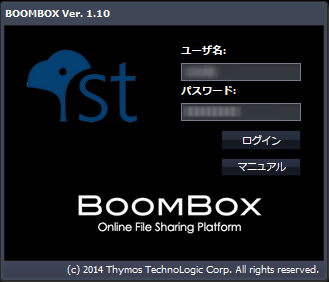
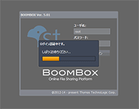
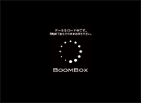

SecretFilesマニュアル
2. ログイン
2.1 ログイン作業
2.1.2 ログイン(アクティベーション後のログイン)
既にアクティベーション作業を完了している場合には、ログイン画面にてユーザ名とパスワードを入力し、「ログイン」ボタンをクリックして下さい。

 
上の図の順で画面の表示が変わり、最終的にSecretFilesの本サービスの画面に遷移します。
2.1.3 タイムアウト
ログイン後最後に操作したところから、一定時間が経過すると、当システムはタイムアウトし、作業を継続することができなくなります。
なんらかの操作を行なった際に、画面には、Login Session timed outと表示しますので、再ログインをして下さい。
(画像)
再ログインは、通常のログインと同様、次のURLを使用して下さい。
https://SecretFiles.cloud.i.u-tokyo.ac.jp/